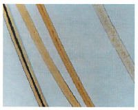

Human hair is one of the most common pieces of microscopic trace evidence found at the scene of a crime...especially violent crimes (assault, sexual assault, murder). Hair samples are valuable pieces of evidence because they do not decompose as rapidly as other body tissues or fluids. Therefore, hair samples remain intact long after other types of tissue have decomposed.

Obviously, human hair samples that have been inadvertently left behind at a crime scene can be useful. Unfortunately however it is not always as useful as one would think because it is very difficult to individualized human hair samples by simply using a microscope. Because so many humans share similar hair colors and textures, the only way to individualize a hair sample is to carefully extract its DNA and perform a DNA analysis. However, this process is time-consuming, expensive, difficult and a trained scientists is needed to perform the task. As a result, DNA analysis is usually used only during the investigation of serious crimes (manslaughter, murder, sexual assaults or kidnapping).
Despite it being difficult to individualize a hair sample using a microscope, it is still often used to compare hair found at a crime scene with a suspect's hair sample. This can provide strong corroborative evidence in a criminal case. So, despite the difficulty of analyzing hair samples, they are still useful to an investigator.